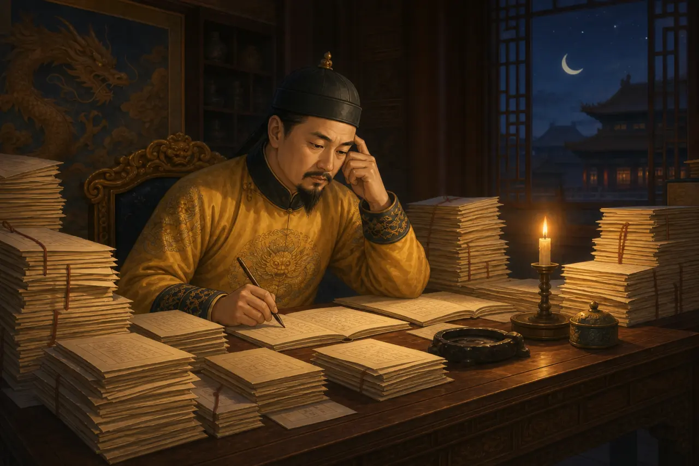

← Back to books
Numbers
Review
Tap a word to hear it and explore the picture.
 Folk tale美猴王大闹天宫The Monkey King Makes Trouble in HeavenOpen story
Folk tale美猴王大闹天宫The Monkey King Makes Trouble in HeavenOpen story
 Money story从贝壳到铜钱：中国古代的钱From Shells to Paper Notes: Money in Ancient ChinaOpen story
Money story从贝壳到铜钱：中国古代的钱From Shells to Paper Notes: Money in Ancient ChinaOpen story

History story从放牛娃到皇帝：朱元璋为什么忙个不停？From Cowherd to Emperor: Why Was Zhu Yuanzhang Always Busy?Open story Historical figure花木兰The Girl Who Took Her Father's PlaceOpen story
Historical figure花木兰The Girl Who Took Her Father's PlaceOpen story
 Folk tale神笔马良Ma Liang and the Magic BrushOpen story
Folk tale神笔马良Ma Liang and the Magic BrushOpen story
 Food story饺子What Surprise Is Hidden Inside a Dumpling?Open story
Food story饺子What Surprise Is Hidden Inside a Dumpling?Open story
Books to Lessons
Use this path for homework and review. Choose your textbook, then open the matching lesson practice.
古人在安静的院子里仰望天空，思考自然和生命的道理。
Long ago, people looked up at the sky from quiet courtyards, thinking about nature and the meaning of life.
很久很久以前，人们怎么买东西、做生意呢？
How did people buy things and do business long, long ago?
古代人用什么聪明的方法保护自己的家园？
What clever ways did ancient people use to defend their homes?
从火药到造纸，从指南针到节气，看看古人怎么观察世界，也改变世界。
From gunpowder to paper, from the compass to the solar terms, see how people long ago studied the world and changed it.
皇帝怎么管理国家？学生学什么？怎么才能做官？
How did emperors rule? What did students learn? How did exams decide your future?
中国人相信什么？喜欢什么样的符号和仪式？
What do Chinese people believe in? What symbols and customs do they love?
不用颜料能画画？脸会说话？青铜钟会唱歌？
Can you paint without colors? Can a face talk? Can bronze bells sing?
节日、庆典、传统——人们一年中最开心的日子。
Festivals, celebrations, and traditions — the happiest days of the year.
从高山到大河，从熊猫家乡到如画山水。
From towering mountains to mighty rivers, from panda homeland to picture-perfect landscapes.
中国人用木头、石头和想象力造出了世界上最美的房子。
Chinese people used wood, stone, and imagination to build some of the world's most beautiful structures.
皇帝穿什么？官员怎么穿？唐朝的男女又是什么模样？
What did emperors wear? How about officials? And what did Tang Dynasty men and women look like?
两根棍子怎么吃饭？饺子里会藏什么？饭菜里又为什么有这么多味道？
How do two sticks help you eat? What might be hidden inside a dumpling? And why do meals have so many flavors?
有些人改变了中国，他们的故事今天还在流传。
Some people changed China, and their stories are still told today.
中国人把最美的文字写成了诗、词和伟大的故事。
Chinese people turned their most beautiful words into poems, songs, and great stories.
白马来送的信仰、微笑的佛、会飞的神仙。
Faith carried by white horses, smiling Buddhas, and flying immortals.
最精彩的故事，一代一代讲下来，每个中国小孩都听过。
The most wonderful stories, told from generation to generation. Every Chinese child has heard them.
Tap a word to hear it and explore the picture.